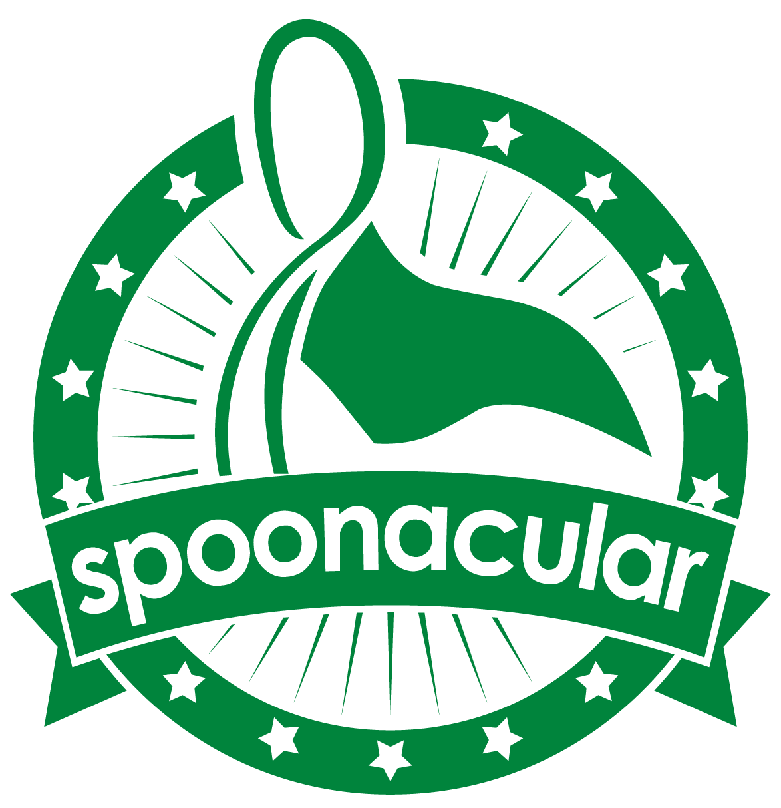

Currently employed as a SWE Intern at The City of El Cerrito Fire Administration. Interested in building cool things with code.
Senior at Sacramento State, graduating in December of 2025.
Contact: oleshchukmike@gmail.com
GOStockScraper |
hosting yet to come... || github Scrape any individual stock tickers and save to profile from yahoo finance. Calculate DCF, WAAC, and much more for your stock analysis needs. Stack: Go, HTMX, CSS |
Recipe App |

Enables users to create, edit, and manage recipes, while retreiving recipe data via the Spoonacular API. Additionally there is a filter option and find reciepe search bar within the app to find all your reciepe needs. Stack: Python, JS, HTML, CSS FrameWork: React, Flask, Django |
|| Problem solving || Fishing || Snowboarding || Backpacking || Wrenching ||